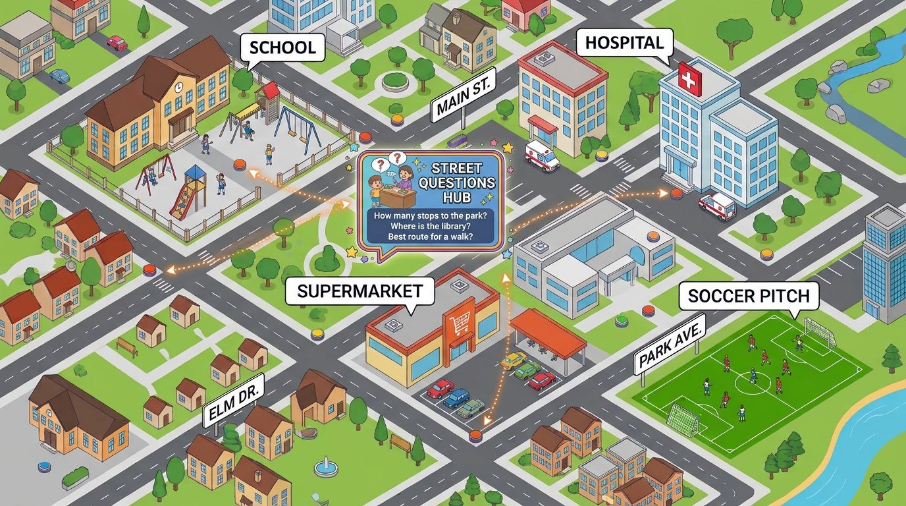

مش لازم تبقى مترجم عشان تتواصل مع شخص أصم أو ضعيف السمع. كلمات قليلة بالإشارة بتفرق كتير. ابدأ من هنا، خطوة خطوة.
ابدأ بالخريطة اسأل المساعددوس على الزرار الأخضر على أي مكان وشاهد الفيديو التعليمي الخاص به.

مساعدك لتعلّم لغة الإشارة. بيجاوب عن الأساسيات وطريقة التواصل مع الصم وضعاف السمع.